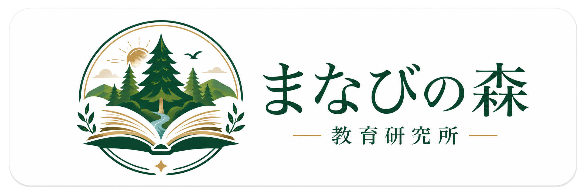

保護者の方へ
子どもの困り感や学校との相談を、一緒に整理します
登校しぶり、学校生活の不安、合理的配慮、就学や進路のことなど、家庭だけで抱え込みやすい内容を整理します。 診断や治療ではなく、学校や関係機関と話し合うための材料づくりを大切にします。
保護者や子どもを責めず、状況と支援ニーズを分けて考えます。

合同会社まなびの森教育研究所は、特別支援教育の実務経験をもとに、子ども・保護者・教員のあいだにある伝わりにくさを整理し、 研修・相談・教材づくりを通して、現場で使える学びの形に整える小さな教育会社です。
合理的配慮、特別支援学級の運営、不登校・登校しぶり、保護者との情報共有などで悩んだときに、状況と次の一歩を一緒に整理します。
目的に合わせて、研修・相談、教材、コラム、研究ノートへ進めるように整理しています。
登校しぶり、学校生活の不安、合理的配慮、就学や進路のことなど、家庭だけで抱え込みやすい内容を整理します。 診断や治療ではなく、学校や関係機関と話し合うための材料づくりを大切にします。
校内研修、教職員向け講演、支援体制づくり、保護者との情報共有などを、学校現場で共有しやすい言葉と実行しやすい形に整理します。
特別支援教育の初任者向け教材、家庭や支援場面で使えるワークシートなどを掲載しています。 対象、内容、価格、購入後の流れを確認してから選べます。
生成AIを答えを出す道具ではなく、支援者が考えを整理するための補助として扱い、学校現場で使うときの注意点や論点を研究ノートとしてまとめています。
教育現場の課題は、制度だけではなく、日々の実践の中で見えてきます。 当社は、現場経験と教育実践を土台に、子ども一人ひとりに合った学びの環境づくりを支援します。
特別支援教育・インクルーシブ教育の知見を基盤に、 学校・家庭・地域のあいだをつなぐ支援を行っています。 理念だけで終わらず、実際の現場で使える形に落とし込むことを重視しています。
学校、教育機関、保護者、地域団体、学習支援に関わる個人・団体からのご相談を受けています。 ご依頼内容に応じて、対面・オンラインの両方に対応します。
特別支援教育、不登校・登校しぶりへの支援、合理的配慮、学校との連携について、 学校・教職員・保護者・教育関係団体向けに研修・講演・相談を行っています。
各事業について、対象、提供内容、形式、ご依頼時の進め方が分かるように整理しています。
学校・教育機関・家庭・地域団体に向けて、教育課題の整理と改善提案を行います。 学びの場づくり、支援体制の見直し、教育実践に関する相談に対応します。
学校や地域向けに、教育実践に役立つ研修・講座を企画し、運営します。 内容は、ご依頼先の課題や参加対象に合わせて調整します。
自然の中での体験を通して、探究心や生活感覚を育むプログラムを企画・運営します。 実施内容は、対象年齢や目的に応じて調整します。
学校・家庭・地域をつなぐ教育イベントの企画と運営を行います。 内容に応じて、企画立案から当日の進行まで対応します。
ご相談内容を確認したうえで、実施方法・費用・日程を調整します。 ご依頼前に内容と費用を確認できる流れにしています。
お問い合わせフォームまたはメールで、相談内容をお知らせください。
通常2営業日以内を目安に返信し、必要に応じて追加確認や日程調整を行います。
目的や対象に応じた実施案と費用をご案内します。内容確定前に金額をご確認いただけます。
確定した内容に基づき、相談、研修、イベント、教材提供を行います。
必要に応じて振り返りや追加相談に対応します。
当社では、特別支援教育の相談・研修とつながる教材づくりを中心に行っています。 現在公開中の特別支援教育関連教材は以下のとおりです。
特別支援教育の専門経験が少ないまま担任を任された先生へ。児童理解、保護者面談、校内相談を最初の30日で整理するPDF教材です。
保護者・支援員のための実践ツール。代表的な支援の考え方を参考にした5種のワークシートを収録。
特別支援教育の現場で使えるWebアプリを無料で公開しています。インストール不要・ブラウザで動作します。
新しい教材、相談導線、研究ノートなど、最近公開した情報をまとめています。
特別支援教育の専門経験が少ないまま担任を任された先生が、最初の30日で確認したい児童理解、保護者面談、校内相談を整理できるPDF教材です。 PDF12ページ、記入式シート5枚、保護者面談文例、校内相談メモ、初任者対応リストを収録しています。
相談や教材づくりの背景にある考え方を、未査読の研究ノートとして整理しています。 実践前の論点整理や専門性の確認資料としてご覧いただけます。
保護者・支援員の方に向けて、特別支援教育に関する情報をお届けしています。
「障害受容」とは何か。慢性的悲哀モデルを軸に、就学前の保護者が直面する5つの現実と就学相談の仕組みを解説します。
記事を読む →就労移行支援・A型・B型・生活介護・グループホーム――卒業後の進路先を整理し、在学中からできることをお伝えします。
記事を読む →「同意」をどう伝えるか、学校に何を確認すべきか、被害を疑ったときの初動まで。特別支援教育29年の現場から保護者へ。
記事を読む →【障害種別シリーズ】発達障害をひとつずつ正確に知る
前頭前野の機能とドーパミン系の違いから、ADHDの脳の仕組みをわかりやすく解説します。
記事を読む →心の理論・サリーアン課題から、「空気を読む」という複雑な処理を解説します。
記事を読む →ディスレクシア・ディスグラフィア・ディスカリキュリアの3タイプと支援を解説します。
記事を読む →認知度が低いDCDの特徴・合併率・自己肯定感への影響を解説します。
記事を読む →【特別支援学校シリーズ】
日常生活の指導・遊びの指導・生活単元学習・作業学習の4形態と生活中心教育との関係を解説。
記事を読む →生活中心教育とは何か。糸賀一雄の思想から2017年学習指導要領改訂まで、その哲学的背景を解説。
記事を読む →【保護者向け実践・支援手法シリーズ】
2024年から私立学校も義務化。申請手順・配慮例・伝え方のコツ。
記事を読む →3制度の比較表と就学先の選び方。在籍変更の方法も解説。
記事を読む →非課税世帯は0円。申請手順・2024年改定・事業所の選び方。
記事を読む →構造化の4要素と家庭で今日からできる実践方法。
記事を読む →強化・消去・プロンプトの基本とDTT・NATの違いを解説。
記事を読む →5つのコアコンピテンシーと家庭でできるSEL実践。
記事を読む →【保護者向け制度・サービス】手続きと支援サービスを整理する
判定の仕組み・等級・使える支援サービス。手帳を持つかどうか迷っている方へ。
記事を読む →令和8年度の支給額・所得制限・申請窓口。見落としがちな手当を整理します。
記事を読む →相談窓口・通所のしかた・費用。「何もしていない」と感じている方へ。
記事を読む →診断なしで使える支援・相談先・学校への伝え方。「様子を見ましょう」と言われた方へ。
記事を読む →二次障害のサインチェックリストと早期対応の方法を解説します。
記事を読む →コラムの内容を読んでも、家庭や学校の状況によって次に考えることは変わります。 学校との相談、合理的配慮、就学・通級・特別支援学級のことで迷う場合は、保護者向け相談ページへ進めます。 家庭や支援場面で使える教材を探している場合は、教材一覧をご確認ください。
教育現場での経験を土台に、実践に結びつく支援を行います。
特別支援教育、インクルーシブ教育、子どもの学びの場づくり、 体験学習、教材開発などを中心に、現場に即した支援を行います。
ご相談内容に応じて、個別相談、研修、教材提供、企画支援の形で対応します。
法人情報・連絡先・事業領域を一覧で確認できます。
| 会社名 | 合同会社まなびの森教育研究所 |
|---|---|
| 英語名 | Manabi no Mori Educational Research Institute LLC |
| 設立 | 2026年4月1日 |
| 所在地 | 千葉県千葉市美浜区 |
| 事業内容 | 教育コンサルティング／研修の企画・実施／自然体験学習プログラムの企画・運営／教育関連イベントの企画・運営／教育教材の企画・販売 |
| お問い合わせ | manabinomorikyouikuken@gmail.com |
| 対応方法 | メールでのお問い合わせを受け付けています。内容確認後、必要に応じて対面・オンラインで対応します。 |
保護者向け相談、研修・講演、教材、取材などのお問い合わせは、お問い合わせフォームまたはメールにてご連絡ください。通常2営業日以内を目安に返信します。
保護者向け相談の例
または直接メール：manabinomorikyouikuken@gmail.com
特別支援教育、発達支援、学習サポートなどについて、考えを整理する補助として使えるAIサービスです。 個別の重要な相談は、学校、専門機関、医療機関、行政窓口、または上の問い合わせフォームをご利用ください。
※ AIによる情報提供と整理の補助です。医療診断、治療、法的判断、学校としての判断を代替するものではありません。